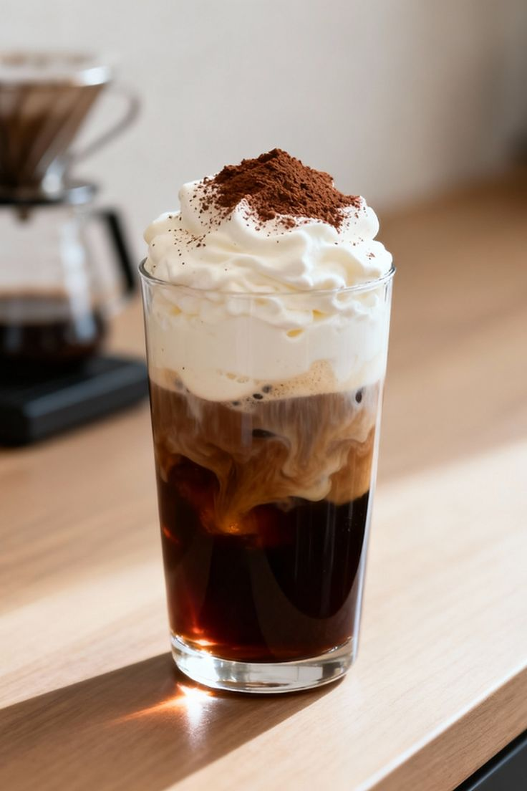
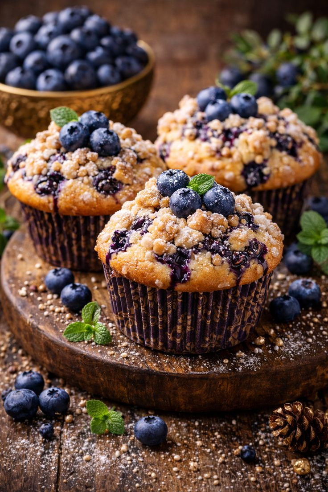

Menu

Espresso
Rich and bold single shot coffee.

Cappuccino
Espresso with steamed milk foam.

Caramel Latte
Smooth coffee with sweet caramel.

Cold Brew
Slow steeped chilled coffee.

Croissant
Fresh buttery flaky pastry.

Blueberry Muffin
Soft muffin with juicy blueberries.